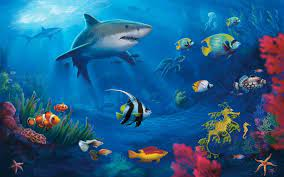

Los mares, océanos, costas y demás ecosistemas marinos, constituyen algunos
de los hábitats más biodiversos del mundo, en los que animales de diferentes
grupos, familias y especies conviven en equilibrio biológico.
Hay que tener en cuenta que el agua salada ocupará una gran porción de
la tierra por lo que la fauna de los ecosistemas marinos es muy extensa y
depende en gran medida tanto de su ubicación como de la profundidad a la que se
puede encontrar los seres vivos.
Mamíferos de los ecosistemas marinos
Ballena franca austral (Eubalaena australis)
Delfín mular o nariz de botella (Tursiops truncatus)
Orca negra o falsa orca (Pseuorca crassidens)
Manatíes o vacas marinas (familia Trichechidae)
Calderón gris (Grampus griseus)
Tiburón blanco (Carcharodon carcharias)
Raya jaspeada (Aetobatus narinari)
Bonito común (Sarda sarda)
Pez espada (Xiphias gladius)
Caballitos de mar (género Hippocampus)
Tortuga laúd (Dermochelys coriacea)
Tortuga carey (Eretmochelys imbricata)
Tortuga boba (Caretta caretta)
Cocodrilo marino (Crocodylus porosus)
Iguana marina (Amblyrhynchus cristatus)
Ostras (familia Ostreoida),
almejas (familia Veneroida) y mejillones (familia Mytilidae).
Moluscos cefalópodos: pulpos (orden Octopoda), calamares (orden
Teuthida), nautilos (Nautilus pompilius) y sepias (orden Sepiida)
Equinodermos
Estrellas de mar (clase Asteroidea), erizos de mar (clase Echinoidea) y
holoturias (clase Holothuroidea).
Cnidarios
medusas (subfilo Medusozoa), anémonas y corales (subfilo Anthozoa)